News is now read mostly online. Every day many publishers post hundreds of reports, and the same event appears under different headlines with different wording and detail. A reader who wants a quick, balanced picture has to open several websites, and it is hard to judge which reports use emotional or one-sided language, which headlines are not supported by the text, and which stories come from well-known newsrooms.
This project, AI-Powered News Aggregator with Advanced Credibility and Content Analysis, is a web application that collects news from selected RSS feeds, removes duplicates, analyses every article with Natural Language Processing and shows the results on a newspaper-style dashboard. For each article it gives a credibility-risk indicator, a sentiment label, eight separate content-analysis scores with plain-language explanations, a short extractive summary (when the text is long enough), a list of other publishers that reported the same event, and a downloadable PDF report.
The system does not decide whether an article is true or false. Its outputs are indicators that help a reader decide which reports deserve a closer look. The original publisher link is always kept.
Before this project, news was consumed in one of three ways, each with gaps:
The first version of this project's own code also had problems that were found during the analysis phase: the backend stored articles without the eight dimension scores, every stored article received the label "Low Risk" from a database default even when no risk had been computed, the model's raw output was shown as a confidence value, and the database allowed anyone with the public key to insert or update articles.
The proposed system is an automated pipeline plus a web dashboard:
When there is not enough text to judge an article, the system shows "Risk not assessed" instead of a made-up score.
In scope: English-language news from selected public RSS feeds (BBC, CNN, Al Jazeera and Yahoo); the text available in the feed (headline and short description); scheduled near-real-time collection (every 30 minutes); credibility-risk, sentiment and eight-dimension analysis; extractive summaries; cross-source grouping; search and filtering; analytics charts; PDF reports; and a REST API.
Out of scope: verifying the facts of a claim; reading full article bodies from publisher websites; languages other than English; user accounts with passwords (only a display name is stored); and training new machine-learning models.
| Component | Minimum | Recommended |
|---|---|---|
| Processor | Dual-core 64-bit CPU | Quad-core CPU |
| RAM | 4 GB | 8 GB (to run both models, the API and the frontend together) |
| Storage | 2 GB free (Python packages and model files) | 5 GB |
| Network | Internet access to the RSS feeds, Supabase and (first run) Hugging Face | |
| Client | Any device with a modern web browser (desktop or mobile) | |
| Software | Version used | Purpose |
|---|---|---|
| Operating system | Windows 10/11, Linux or macOS | Development and hosting |
| Python | 3.10 or later | Backend, analysis pipeline, scheduler |
| Node.js | 20 or later | Next.js frontend |
| Supabase (PostgreSQL) | Cloud project | Database with Row Level Security |
| Web browser | Chrome, Edge, Firefox | User interface |
| Technology | Role in this project |
|---|---|
| Python | RSS collection, text cleaning, analysis pipeline, database service, PDF reports. |
| FastAPI + Uvicorn | REST API: articles, article by id, groups, analytics, analyse text, PDF report, health. |
| Hugging Face Transformers + PyTorch | Runs mrm8488/bert-tiny-finetuned-fake-news-detection (classifier) and distilbert-base-uncased-finetuned-sst-2-english (sentiment) on CPU. |
| feedparser, httpx, BeautifulSoup | Download feeds with a timeout, parse RSS entries, strip HTML. |
| APScheduler | Runs the collection and analysis job every 30 minutes without overlapping runs. |
| ReportLab | Builds the A4 PDF report on the server. |
| Supabase / PostgreSQL | Stores articles, analysis results (JSONB dimensions) and reader names; Row Level Security. |
| Next.js, React, TypeScript | Server-rendered pages: front page, sections, article, search, compare, analytics. |
| Tailwind CSS | Responsive newspaper-style layout. |
| Recharts | Radar chart of the eight dimensions and analytics bar/area charts. |
| jsPDF | PDF report generated in the browser for any article. |
| Pytest, Vitest | Automated backend and frontend tests. |
The overall architecture is layered so that collection, analysis, storage, API and presentation can be developed and tested separately (Fig 1.1).
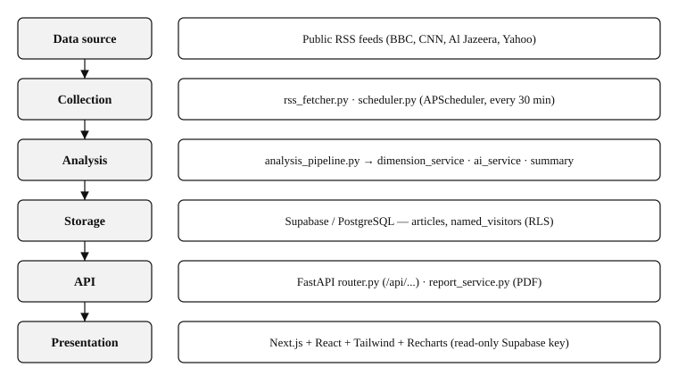
The proposed system turns a stream of RSS entries into analysed, grouped and searchable articles. Its main idea is to give several small, explained indicators instead of one verdict, and to say clearly when the available text is not enough to judge.
Technical feasibility. All parts use mature open-source tools. The two transformer models are small (BERT-tiny has about 4.4 million parameters) and run on a normal CPU. Supabase provides a hosted PostgreSQL database with an API, so no database server has to be maintained. The project was built and tested on a standard laptop-class environment.
Economic feasibility. All libraries are free. Supabase, the Hugging Face models and the RSS feeds are available at no cost for a project of this size. The only cost is development time.
Operational feasibility. The reader needs no training: the interface looks like a newspaper and every score has a short explanation. Collection runs automatically, so no manual work is needed to keep the edition fresh. Failure of one feed or of the models does not stop the rest of the system.
Schedule feasibility. The work was divided into twelve weekly stages (requirements, collection, cleaning, models, sentiment, summary, risk interpretation, grouping, eight dimensions, database and API, reports and analytics, testing and documentation), which fits one semester.
| No. | Requirement | Implemented in |
|---|---|---|
| FR1 | Collect articles (title, publisher, URL, category, excerpt, time) from RSS feeds every 30 minutes. | rss_fetcher.py, scheduler.py |
| FR2 | Clean HTML and skip duplicates by title and URL, including repeated runs. | rss_fetcher.py, db_service.py |
| FR3 | Score eight dimensions with an explanation each; leave a dimension unscored when it cannot be measured. | dimension_service.py, scoring.ts |
| FR4 | Run the fake-news classifier and sentiment model; report "unavailable" if they cannot run. | ai_service.py |
| FR5 | Compute a risk score and label (Low / Moderate / High or not assessed) and a Needs-Verification flag. | analysis_pipeline.py |
| FR6 | Group reports of the same event from at least two publishers. | clustering_service.py, clustering.ts |
| FR7 | Search by keywords and filter by section, publisher, risk, verification flag and date. | search page, repository.ts |
| FR8 | Show the article page with credibility panel, radar chart and dimension table. | article/[id]/page.tsx |
| FR9 | Show analytics: sections, risk labels, tone, dimension averages, publishers, timeline, coverage. | analytics/page.tsx, /api/analytics |
| FR10 | Download a PDF report of one article. | report_service.py, pdfReportGenerator.ts |
| Requirement | How it is met |
|---|---|
| Usability | Newspaper layout, plain-language explanations, responsive design for mobile. |
| Reliability | Feed timeouts; a failed feed, model or database call is logged and the run continues; no overlapping scheduler runs. |
| Transparency | Every score has an explanation; model scores are labelled as raw outputs; missing values are shown as "n/a" or "Not reported". |
| Security | Public key can only read articles; service key only on the server; CORS allow-list; input validation; rate limit on expensive endpoints; internal errors are not shown to users. |
| Maintainability | Separate modules for collection, analysis, storage, API and UI; one scoring engine mirrored in Python and TypeScript and checked by shared test vectors. |
| Performance | Models load once and lazily; database results are cached for one minute in the frontend. |
This chapter describes the design with UML diagrams, the module structure, the user interface and the database tables. The diagrams reflect the implemented code.
The object diagram shows one runtime snapshot: a BBC article processed by the pipeline, with its credibility result, sentiment result and dimension analysis, and the cross-source group it shares with the matching Al Jazeera article. The values are taken from a real run of the implemented pipeline on the BBC and Al Jazeera feeds of 25 November 2026 (models not installed in that environment, so the status is "partial" and the classifier score is empty).
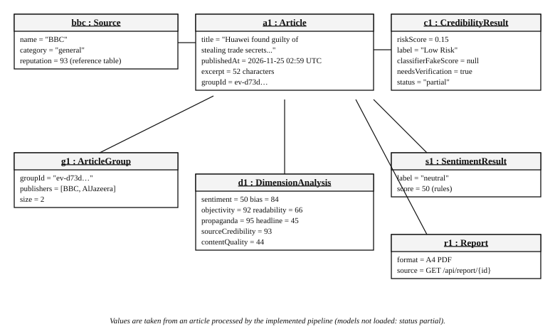
Each Article belongs to one Source and has exactly one CredibilityResult, one SentimentResult and one DimensionAnalysis; it may have a Summary and may belong to an ArticleGroup (a group has at least two articles). The analysis results are parts of the article (composition, filled diamond); Report depends on Article («uses»). In the database these are stored as columns of the articles table (the eight scores and explanations in one JSONB column). Multiplicity [0..1] means the value may be missing ("not measured"), never zero.
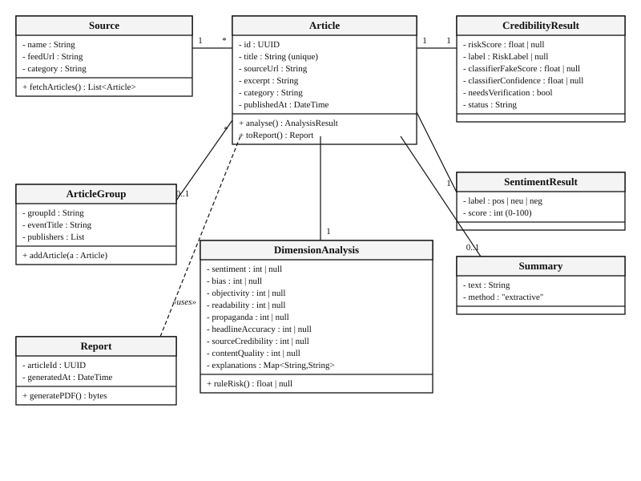
There are two actors. The Scheduler collects, de-duplicates, analyses and groups articles. The Reader registers a display name, reads the dashboard, searches and filters, opens the article analysis, compares coverage, views analytics, downloads PDF reports, and (through the API) can analyse any text.
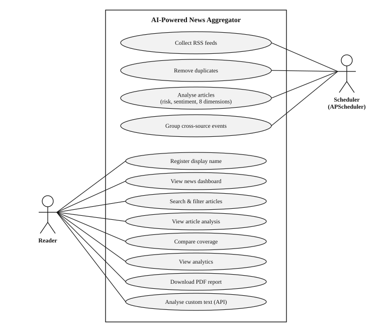
The sequence diagram shows a reader opening an article and downloading its PDF report. The Next.js server reads the article directly from Supabase with the read-only public key; the PDF is produced by the FastAPI backend with ReportLab.
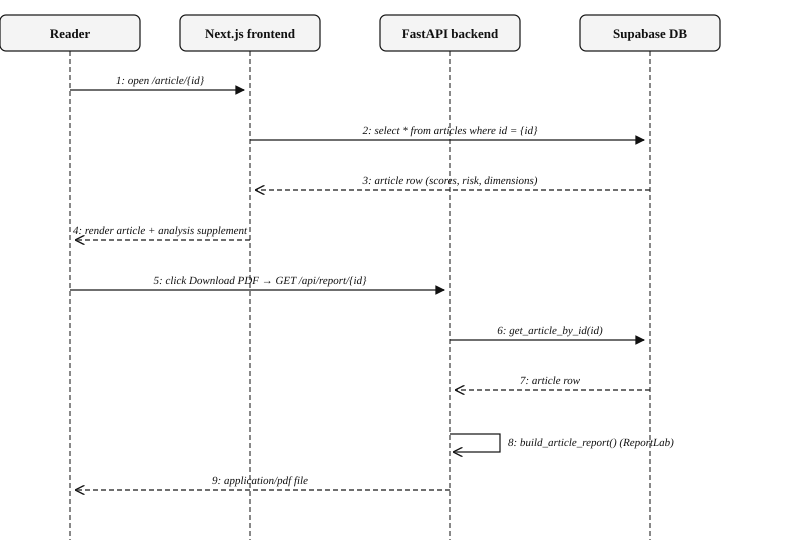
The activity diagram shows one scheduled ingestion run. The first loop downloads every feed (a failed feed is logged and the run continues); the second loop processes every new article: duplicate check, analysis, risk label or "not assessed", Needs-Verification flag and storage. After the loop, recent articles are re-grouped.
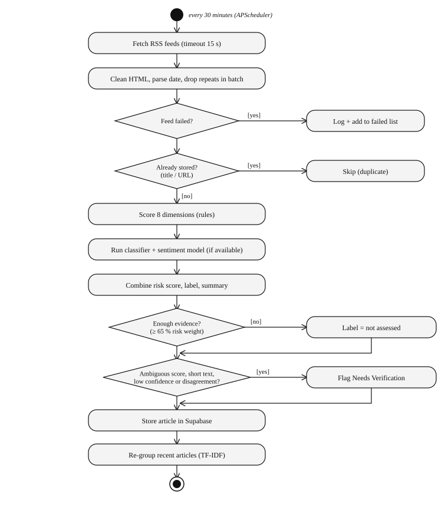
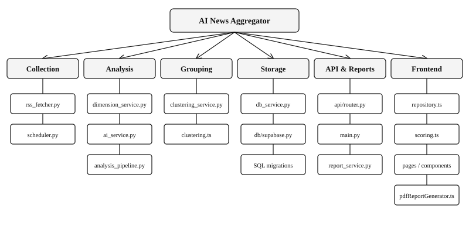
| Module | Responsibility |
|---|---|
| Collection | rss_fetcher.py downloads each feed (15 s timeout), removes HTML, converts dates to UTC ISO format and drops repeats; scheduler.py runs the job every 30 minutes with a lock against overlapping runs. |
| Analysis | dimension_service.py scores the eight dimensions and the rule-based risk; ai_service.py loads and runs the two models; analysis_pipeline.py combines them into risk, label, verification flag, summary and status. |
| Grouping | TF-IDF + cosine similarity (threshold 0.32) on headline and lead sentence, 48-hour window, members within 36 hours of the seed, at least two publishers. |
| Storage | db_service.py skips already-stored articles before analysis, inserts rows, updates groups; SQL scripts create tables, constraints and security policies. |
| API & Reports | router.py exposes the REST endpoints with validation; main.py adds CORS, rate limiting and error handling; report_service.py builds the PDF. |
| Frontend | repository.ts loads and normalises articles; scoring.ts scores live-feed articles with the same rules; pages and components render the UI; pdfReportGenerator.ts exports PDFs in the browser. |
The rule-based risk is the inverse of a weighted average of five dimensions: Source Credibility (0.35), Propaganda (0.20), Objectivity (0.15), Bias (0.15) and Headline Accuracy (0.15). Only dimensions that could be scored are used; if they carry less than 65% of the weight, no risk score is given. When the classifier runs, the final risk is the mean of the rule-based risk and the classifier's fake-class score. The label is Low Risk (≤ 0.35), Moderate Risk (≤ 0.65) or High Risk (> 0.65). The Needs-Verification flag is raised when there is no score, the score is between 0.40 and 0.60, the excerpt has fewer than 150 characters, the classifier confidence is below 0.60, or the classifier and the rules differ by 0.50 or more. These values are heuristics, not calibrated probabilities.
| Dimension | Measurement (0–100) | Left unscored when |
|---|---|---|
| Sentiment | DistilBERT SST-2 positive score (or positive/negative word lists); 50 = neutral | never |
| Bias | Loaded / partisan words; missing attribution lowers the score | never |
| Objectivity | Evaluative adjectives (e.g. "terrible", "amazing") | never |
| Readability | Flesch Reading Ease of headline + excerpt | headline only |
| Propaganda | Clickbait phrases, shouting capitals, stacked "!!" | never |
| Headline Accuracy | Share of headline key terms found in the excerpt | no excerpt |
| Source Credibility | Hand-curated reference table of newsrooms | publisher not in table |
| Content Quality | Length and number of sentences of the excerpt | no excerpt |
The interface follows a newspaper design called The Daily Signal: a masthead, section navigation (World, India, Politics, Business, Technology, Science, Culture, Sports, Coverage, Analysis) and a search link. Credibility is shown as a small coloured mark (green Low, amber Moderate, red High, hollow grey "not assessed") with a separate "Needs verification" mark. The layout is responsive.
| Page (URL) | Purpose |
|---|---|
| / | Front page: latest articles, lead stories, section blocks, edition statistics. |
| /section/[slug] | All articles of one section. |
| /article/[id] | Article excerpt, original link, credibility panel, "also reported by", analysis supplement, PDF download. |
| /search | Keyword search with filters; external news search when local results are few. |
| /compare | Cross-source coverage: each event with one column per publisher. |
| /analytics | "News Intelligence Report" with seven charts. |
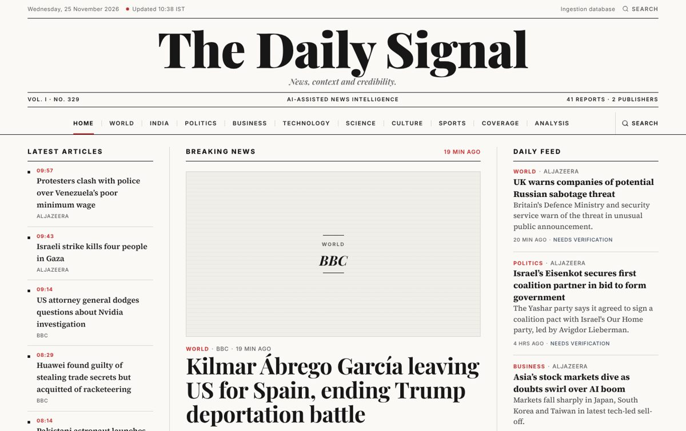
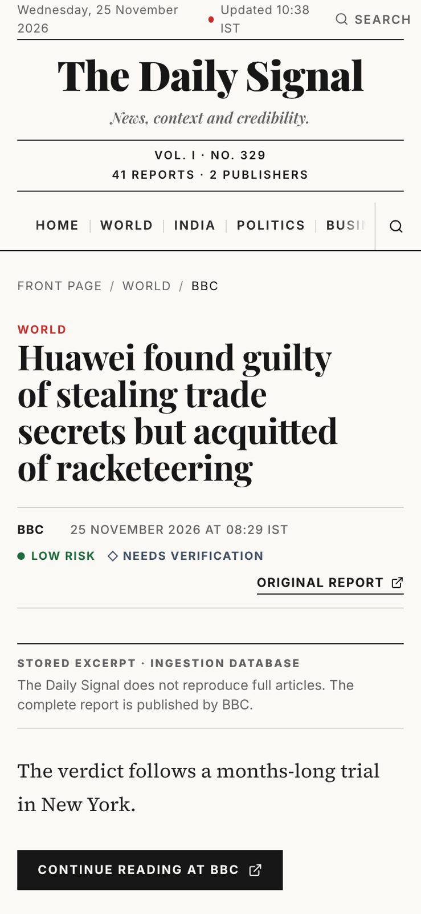
The database has three tables. articles is written only by the backend (service-role key) and is readable by the public key; named_visitors allows public read and insert for the name-only registration; user_profiles is reserved for authenticated users and each user can access only their own row.
| Column | Type | Constraint / default | Description |
|---|---|---|---|
| id | uuid | PK, gen_random_uuid() | Article identifier |
| title | text | NOT NULL, UNIQUE | Headline (database-level duplicate check) |
| source_domain | text | Publisher name | |
| source_url | text | indexed | Link to the original report |
| content_summary | text | Excerpt supplied by the feed | |
| category | text | default 'general' | Feed category |
| published_at | timestamptz | default now() | Publication time from the feed |
| created_at | timestamptz | default now() | Ingestion time |
| sentiment | text | positive / neutral / negative | |
| risk_score | real | CHECK 0–1 or NULL | Combined heuristic risk |
| credibility_label | text | CHECK Low/Moderate/High Risk or NULL, no default | NULL = not assessed |
| needs_verification | boolean | default false | Verification flag |
| confidence_level | real | Classifier top-class score (uncalibrated) | |
| model_fake_probability | real | Classifier fake-class score (uncalibrated) | |
| is_fake, credibility_score | boolean, real | Legacy classifier fields (NULL when the model did not run) | |
| dimensions | jsonb | default '{}' | Eight scores (or null) + explanations |
| ai_reasoning | text | Explanation of risk and verification | |
| ai_summary, summary_method | text | Extractive summary and its method | |
| group_id, event_title | text | indexed | Cross-source group |
| analysis_status | text | CHECK complete/partial/unavailable/pending/legacy | How complete the analysis is |
| analysis_method, model_version, analyzed_at | text, text, timestamptz | Provenance of the analysis |
| Table.Column | Type | Constraint | Description |
|---|---|---|---|
| named_visitors.id | uuid | PK | Visitor identifier |
| named_visitors.name | text | UNIQUE, NOT NULL, 1–40 characters | Display name entered on first visit |
| named_visitors.created_at | timestamptz | default now() | Registration time |
| user_profiles.id, name, saved_topics | uuid, text, text[] | PK/FK → auth.users; RLS own row | Reserved for authenticated users |
The screens below were captured from the running application on 25 November 2026. The articles are real items from the BBC World and Al Jazeera RSS feeds, processed by the implemented backend pipeline. In that environment the transformer models were not installed, so every article shows status "partial" and "Classifier fake score: Not available"; with the models installed these fields are filled in.
On the first visit the reader enters a display name (1–40 characters). It is stored in the named_visitors table and in the browser.
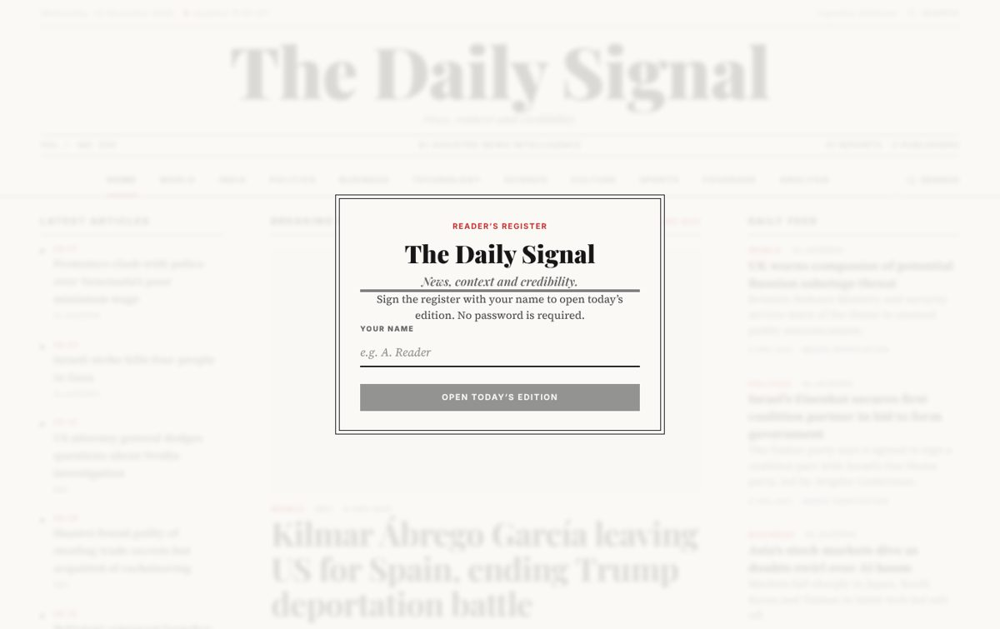
The reader types keywords and can filter by section, publisher, credibility risk (including "Not assessed"), order, date range and "Needs verification only" (for example, Sports + Needs verification returned three reports). The result shows the risk mark and verification flag of each article.
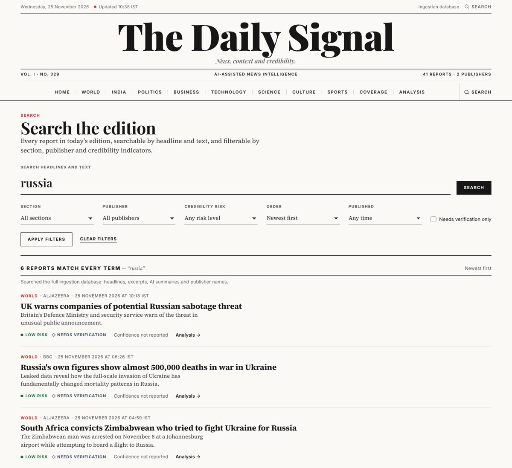
The article page shows the stored excerpt, the original-report link and the credibility panel: risk label, risk score, classifier fake score, classifier confidence and verification status, with the reasoning text. "Also reported by" lists the Al Jazeera report grouped with this BBC report.
The analysis supplement shows the radar chart (with the edition average as a dashed line) and the table of scores with the meaning of each scale and an explanation.
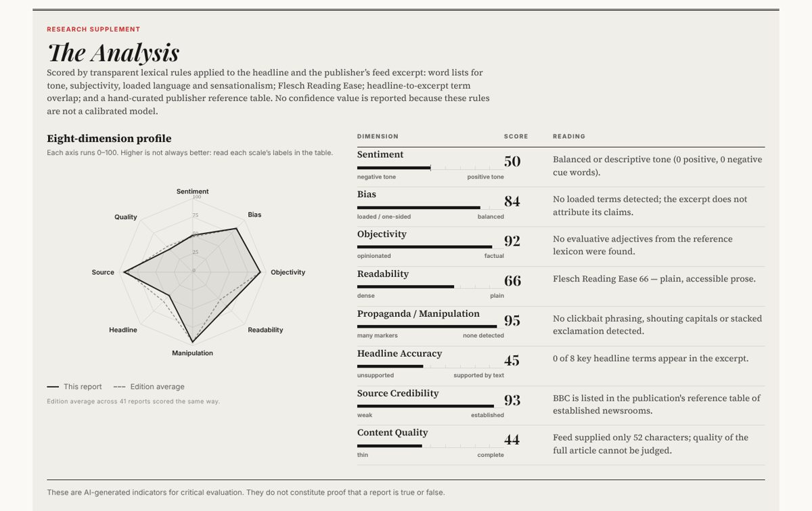
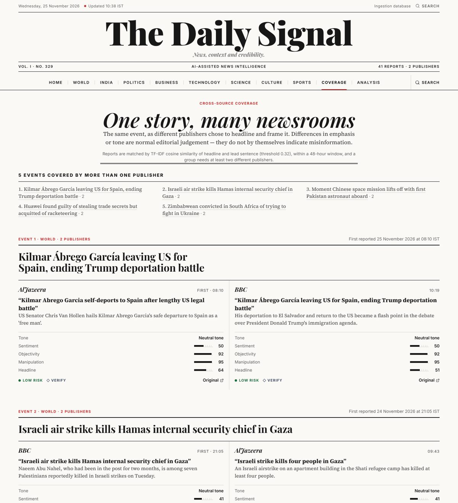
Headline figures and charts for sections, risk labels, tone, average dimension scores, publication timeline, publishers and coverage width. Each dimension average uses only the articles where that dimension could be scored.
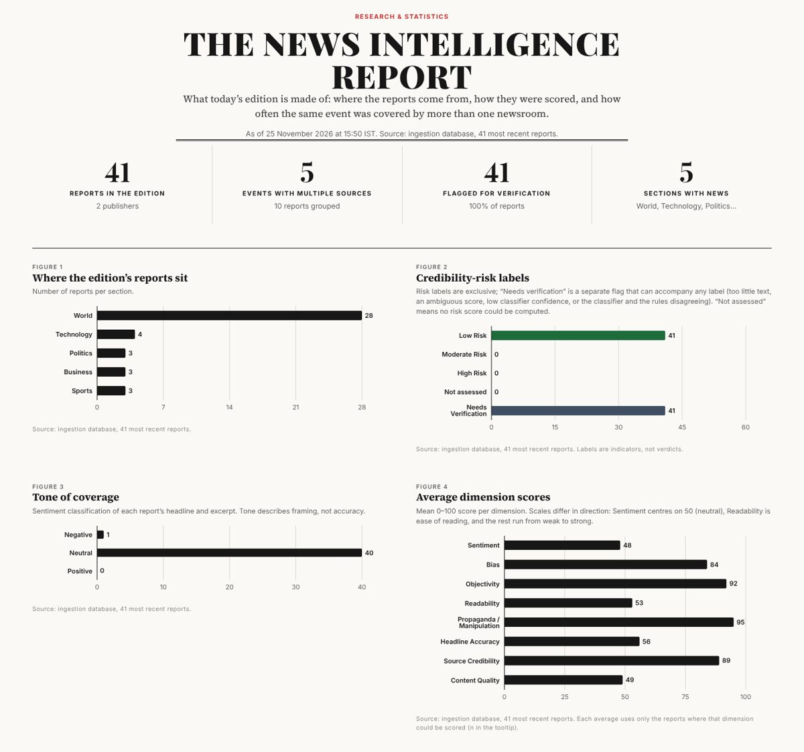
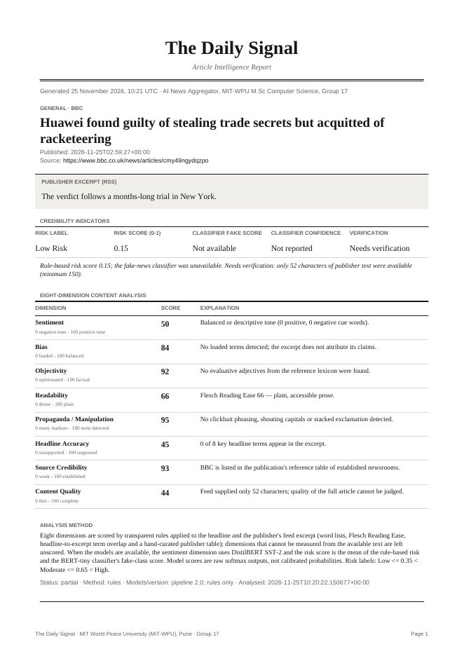
POST /api/analyze accepts any text and returns the full analysis without storing it. The example below uses a deliberately sensational text; the output was produced by the implemented API (rules only, models not installed).
{{ANALYZE_EXAMPLE}}
Table 4.1 lists all REST endpoints (each is available under /api and /api/v1).
| Method | Path | Input | Output |
|---|---|---|---|
| GET | /api/health | – | Status, database configured, model state, last run |
| POST | /api/analyze | text (1–20,000 chars), title, publisher | Full analysis (not stored) |
| GET | /api/articles | limit 1–200, offset, category, risk, q, needs_verification | Article list |
| GET | /api/article/{uuid} | UUID | One article or 404 |
| GET | /api/groups | – | Groups with publisher-wise coverage |
| GET | /api/analytics | limit | Counts and dimension averages |
| GET | /api/report/{uuid} | UUID | PDF file |
| POST | /api/ingest | X-Ingest-Token header | Run summary (disabled unless a token is set) |
The backend is a FastAPI application (backend/main.py) with the scheduler started at application start-up. The analysis engine was first written in TypeScript for live feeds; for this version it was ported line by line to Python so that the backend and frontend use one scoring method. A shared file of ten reference inputs and outputs (shared/scoring_vectors.json) is checked by both test suites, so the two copies cannot drift apart. The transformer models are loaded on first use; if they cannot be loaded, the pipeline still stores the rule-based analysis and marks it "partial". Database changes are delivered as idempotent SQL migrations that do not delete data.
Steps to run: (1) run supabase_complete_setup.sql in Supabase (or migrations 01 and 02 on an existing database); (2) in backend, install requirements.txt, set SUPABASE_URL and SUPABASE_SERVICE_ROLE_KEY in .env, run python -m services.scheduler once and start uvicorn main:app; (3) in frontend, set the public Supabase URL and anon key in .env.local, run npm install and npm run dev.
Automated unit and integration tests were written for every module. External services are replaced by test doubles: a fake model pipeline (so model weights are not downloaded), an in-memory database client, and mocked HTTP responses for RSS feeds. Tests that need the real models, real feeds or a real Supabase project are opt-in.
| ID | Module | Test case | Expected result | Result |
|---|---|---|---|---|
| T1 | Scoring | Python and TypeScript output for 10 reference inputs | Identical scores and explanations | Pass |
| T2 | Scoring | Headline only, unknown publisher | Headline accuracy, content quality, readability, source = null; label "Unavailable" | Pass |
| T3 | Risk | Scores 0.35 / 0.36 / 0.65 / 0.66 | Low / Moderate / Moderate / High | Pass |
| T4 | Model | Classifier returns LABEL_1 = 0.9 | fake score 0.9, predicted "fake" | Pass |
| T5 | Model | Empty text / model not installed / unexpected labels | Status "unavailable", no score invented | Pass |
| T6 | Pipeline | Classifier confidence 0.52; classifier and rules disagree | Needs verification = true with reason | Pass |
| T7 | RSS | Sample feed with HTML, date and an untitled item | Clean text, ISO date, untitled item dropped | Pass |
| T8 | RSS | One feed returns HTTP 500 | Other feeds collected, failed feed listed | Pass |
| T9 | Database | Same batch stored twice; URL with tracking parameter | No duplicate rows | Pass |
| T10 | Database | Article without analysis label | Stored with NULL label (never "Low Risk") | Pass |
| T11 | Grouping | Same event from BBC and Al Jazeera; same publisher twice; 39 hours apart; accented spelling | Grouped / not grouped / not grouped / grouped | Pass |
| T12 | API | Empty text, 20,001 chars, invalid UUID, invalid risk value | HTTP 422 | Pass |
| T13 | API | Database failure | HTTP 503 without internal error text | Pass |
| T14 | Security | CORS from unknown origin; 3 requests with limit 2; ingest without token | Blocked / 3rd gets 429 / 404 | Pass |
| T15 | Report | PDF with full data and with an empty article | All fields present; "Not computed", no "Low Risk" | Pass |
| T16 | Frontend | News card and PDF for an unassessed article | "Not assessed", "n/a", no default label | Pass |
| T17 | Frontend | External search fallback and evidence threshold | GDELT used when Google News is empty; headline-only result not analysed | Pass |
| Suite / check | Command | Result |
|---|---|---|
| Backend unit + API tests | python -m pytest | 62 passed, 3 skipped (opt-in) |
| Frontend tests | npm run test | 32 passed (5 files) |
| Frontend lint / type check | npm run lint, tsc --noEmit | No errors |
| Frontend production build | npm run build | Successful |
| Backend start-up | uvicorn main:app | Started; /api/health and /api/analyze responded |
| End-to-end run | Real BBC + Al Jazeera items → pipeline → app | 41 stored, 41 duplicates skipped on re-run, 5 groups |
| Real model inference | RUN_MODEL_TESTS=1 | Not executed: model download blocked in the test environment |
| Live RSS / Supabase | RUN_LIVE_TESTS=1 | Not executed: no network access to feeds or credentials in the test environment |
No accuracy, precision or recall figures are reported: the classifier could not be run in the test environment and no labelled news dataset was evaluated. scripts/validate_models.py is provided to print the model's raw outputs on known examples once the models are installed.
The following excerpts are copied from the project source code.
{{CODE:dimension_rule_risk}}
{{CODE:pipeline_risk}}
{{CODE:ai_classify}}
{{CODE:cluster_loop}}
{{CODE:router_article}}
The project delivers a working AI-assisted news aggregator. News is collected automatically every 30 minutes, duplicates are removed, every article receives a credibility-risk indicator, a sentiment label and eight explained content scores, related reports are grouped across publishers, and the results are available through a REST API, a responsive dashboard, an analytics page and PDF reports.
The main improvement made during this phase is honesty of the output: one scoring method is shared by the backend and frontend, missing information is shown as missing instead of as a default value, model scores are labelled as uncalibrated, and the database no longer marks unanalysed articles as "Low Risk". All automated tests that could run in the development environment passed, and the tests that could not run are listed. The system is an aid for critical reading, not a fact-checking authority.